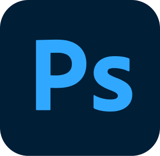
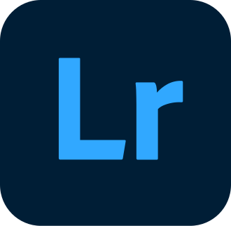
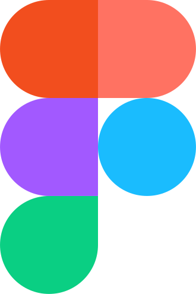

La suite complète
Toutes les applications ScoutCraft, ouvertes directement dans votre navigateur.
Documents
Image et mise en page
ScoutDesignMise en page et édition de documents graphiquesÉquivalent de Adobe InDesignOuvrir ↗
 ScoutVectorIllustration vectorielleÉquivalent de Adobe IllustratorOuvrir ↗
ScoutVectorIllustration vectorielleÉquivalent de Adobe IllustratorOuvrir ↗

ScoutPhotoRetouche et création d’imagesÉquivalent de Adobe PhotoshopOuvrir ↗
ScoutLightDéveloppement photo non destructifÉquivalent de Adobe LightroomOuvrir ↗
ScoutFigConception d’interfaces et prototypesÉquivalent de FigmaOuvrir ↗ ScoutTexturePeinture de textures 3DÉquivalent de Adobe Substance 3D PainterOuvrir ↗